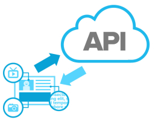
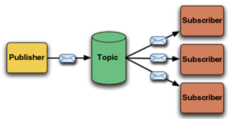

Web Services Development
Frank Walsh (fxwalsh@wit.ie)
Introduction to Web Services
Introduction to Version Control and Node.js
Web APIs and Express

Database - Mongo & Mongoose
Microservices

Unit Testing APIs
Highly Available Services